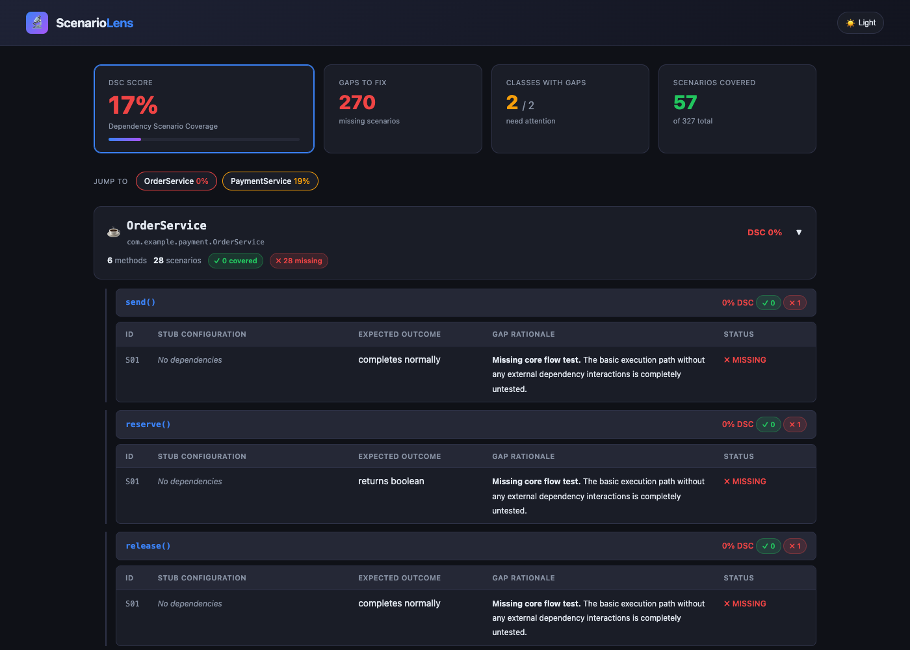

JaCoCo tells you which lines ran. SonarQube checks your branches. PIT tests your assertions. But what tells you if you actually tested the right combinations of real-world scenarios? ScenarioLens does. Stop guessing if your mocks cover what really happens in production.
The Illusion of Safety
As senior engineers, we've all been there. Your PR has perfect coverage. The CI pipeline is glowing green. Then production falls over because a downstream payment service returned an unexpected null while your database transaction was quietly rolling back.
A test suite can easily achieve 100% branch coverage while missing entire combinations of dependency behaviors. Until now, none of your existing tools could warn you about the scenarios you forgot to mock.
Under the Hood
We know how painful slow test suites are. That's why ScenarioLens doesn't spin up your Spring context, instrument your bytecode, or run a single test. It analyzes your source code at rest.
JavaParser + JavaSymbolSolver builds a full typed AST of the method under test.
Identifies all injected dependencies — Spring Data repos, Feign clients, KafkaTemplate, event publishers.
AST-driven CFG with if/else, try/catch, switch, and nested condition edges — no bytecode required.
Generates stub variations per call: enum constants, null returns, boolean outcomes, exception paths, void presence/absence.
Three-rule CFG pruning eliminates scenarios that cannot coexist on any execution path. Up to 99.97% pruning on real codebases.
Parses when/thenReturn, when/thenThrow, doReturn from test classes including @BeforeEach setup merging.
Matches pruned scenario matrix against existing tests. Gaps are classified AUTO-VALIDATED, BOUNDARY, or INFO with actionable recommendations.
Coverage Gaps
Your existing tools are fantastic at what they do, but they have a blind spot when it comes to complex dependency interactions. ScenarioLens is designed to sit right alongside them to complete the picture.
| Gap Type | JaCoCo | SonarQube | PIT | ScenarioLens |
|---|---|---|---|---|
| Missing scenario combinations | — | — | — | ✓ |
| Enum value coverage gaps | — | — | — | ✓ |
| Null return from dependency untested | — | — | — | ✓ |
| Specific stub combinations missing | — | — | — | ✓ |
| Weak assertions (assertNotNull) | — | — | ✓ | ✓ |
| Untested branches | — | ✓ | ✓ | ✓ |
Actionable Insights
We hate noisy tools as much as you do. Every coverage gap ScenarioLens finds is strictly categorized by how confidently the tool can verify it, so you know exactly what to fix first.

Authentic gap analysis report generated from the PaymentService example repository.
ScenarioLens fully verifies presence and correctness. Missing scenarios fail the build at your configured threshold.
Tool generates the scenario, developer confirms the stub values. Useful for config-driven thresholds and numeric boundaries.
Tool cannot validate statically. Surfaced for manual or LLM review. Never fails the build.
Get Running Fast
Drop the Maven plugin into your project, point it at your target package, and get a comprehensive gap report instantly.
<plugin> <groupId>io.scenariolens</groupId> <artifactId>scenariolens-maven-plugin</artifactId> <version>0.1.0</version> <configuration> <targetPackage>com.example.payment</targetPackage> <minScenarioCoverage>70</minScenarioCoverage> <maxScenariosPerMethod>500</maxScenariosPerMethod> </configuration> </plugin>
# Clone and install git clone https://github.com/scenariolens/scenariolens.git cd scenariolens && mvn install -DskipTests -q # Run against the example payment service cd examples/payment-service mvn scenariolens:analyze -DtargetPackage=com.example.payment # Output [INFO] Methods analyzed: 22 [INFO] Total scenarios: 84 [WARN] AUTO-VALIDATED MISSING — order status CANCELLED [INFO] Report: target/scenariolens/report.html
Future-Proof
General-purpose AI coding agents are great, but they struggle to know what tests to write. ScenarioLens generates a structured JSON report designed specifically for LLM consumption.
AGENT INSTRUCTION
It works today. No API keys, no proprietary provider lock-in, and zero integration work required.
The Roadmap
Phase 1 is battle-tested and ready. Here is what we're building next to make ScenarioLens even more powerful:
@Value properties parsing without needing test execution.@MockBean support, and SonarQube generic XML output.Join the engineers shipping resilient code with Dependency Scenario Coverage.